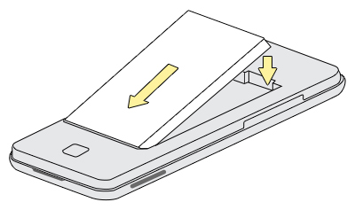

Care and Preparation
When caring for your flower garden you want to feed your plants properly, control pests and weeds.
When caring for your flower garden you want to feed your plants properly, control pests and weeds. Good soil is a must to successful gardening, landscaping, and healthy flowers. You have to balance the soil structure with nutrients and regulate the pH to cover your plants' needs. And above all, remember that many flower gardens fail because they just don't get enough of your attention.
| Flower | Type | Soil |
|---|---|---|
| Chrysanthemum | perennial | well drained |
| Gardenia | perennial | acidic |
| Gerbera | annual | sandy, well-drained |
| Iris | perennial | slightly acidic |
| Lilac | perennial | alkaline |
| Salvia | perennial | average |
| Snowdrop | perennial | humus-rich (rich in ) |